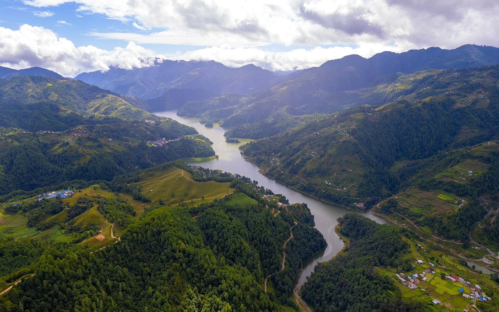

Ingest sources
Reports, tables, registries, and maps retain provenance and boundaries.
Governed agent system · civic knowledge
A governed AI research workflow where repository rules, validators, and retrieval benchmarks constrain agent output across a public, source-linked evidence system.

The central problem
Run-of-river hydropower peaks with the monsoon. Demand does not. Nepal therefore exports wet-season surplus while importing expensive dry-season power. The project investigates that timing problem across generation, storage, transmission, trade, solar complementarity, institutions, and project finance.
Built independently from source ingestion through the public explorer.

The research starts with a physical constraint: river timing, storage, transmission, and public evidence have to be interpreted together.
The agent workflow
Agents can accelerate research and maintenance, but they do not decide their own evidence standard.
Reports, tables, registries, and maps retain provenance and boundaries.
Sources, data, entities, concepts, claims, and syntheses have different permissions.
Templates, links, indexes, ownership rules, and search behavior run through automated checks.
Observed agent mistakes become new rules, prompts, validators, or unresolved questions.
Measured correction
The earlier 46/50 → 50/50 result remains a development benchmark used while changing ranking behavior. The separate v1 holdout was frozen before one read-only search run and was not used for tuning. Its six personas are simulated and its relevance judgments are internal—not external user research. Post-run judgment gaps remain flagged rather than being edited into v1.

Selecting Upper Tamakoshi on the live map exposes the project identity and capacity while preserving its national infrastructure context.
Spatial navigation
Page–map bindings connect national claims to the places and infrastructure they describe. A reader can move from a project or corridor to its source page, data table, related claims, and unresolved questions without losing the geographic context.